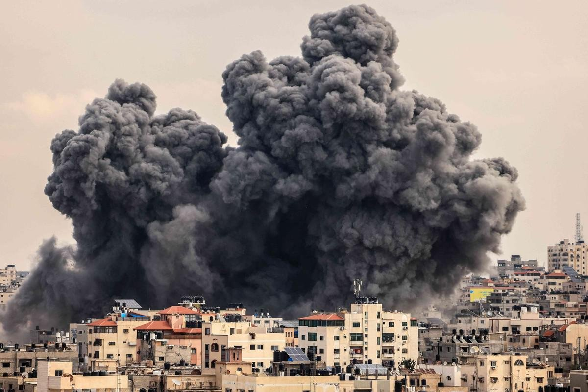
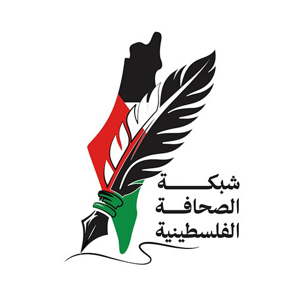
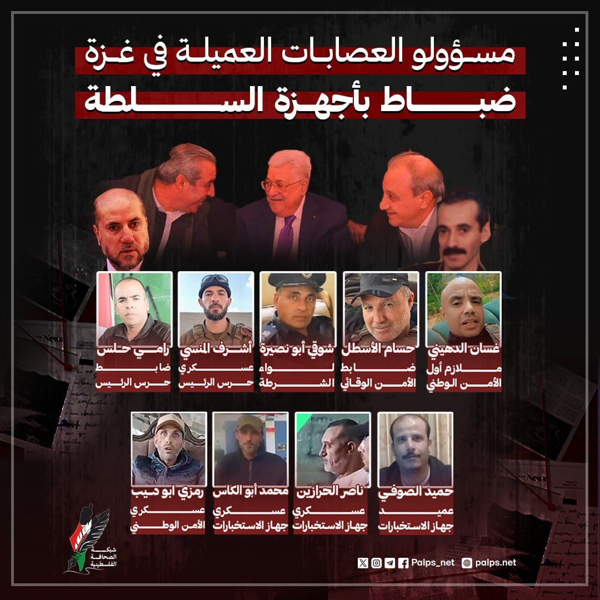
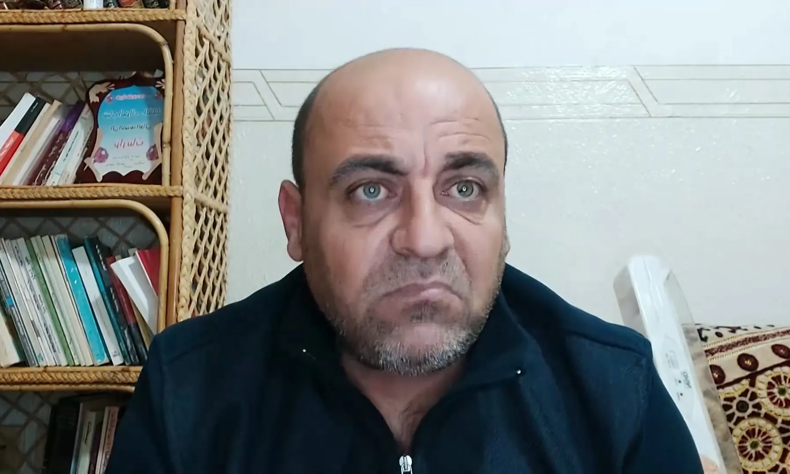
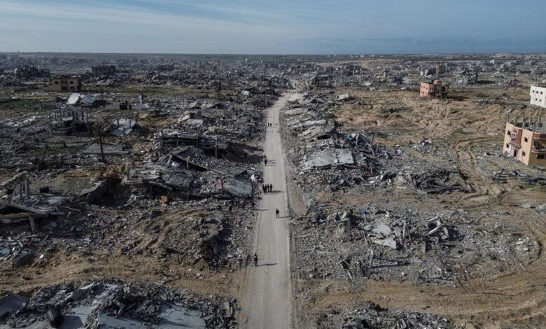
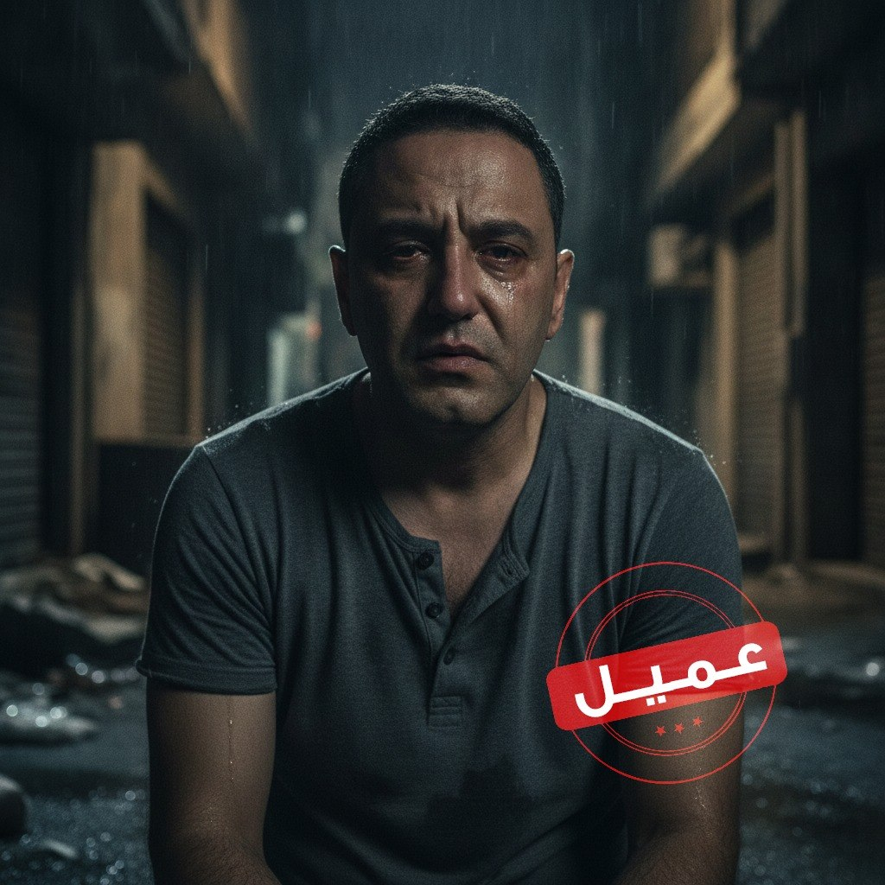
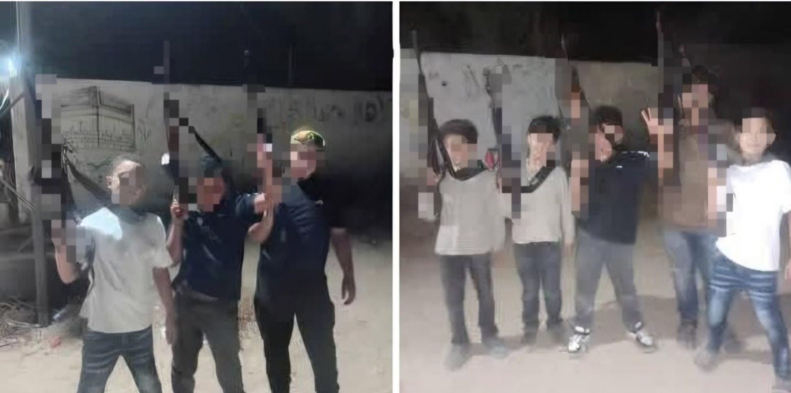
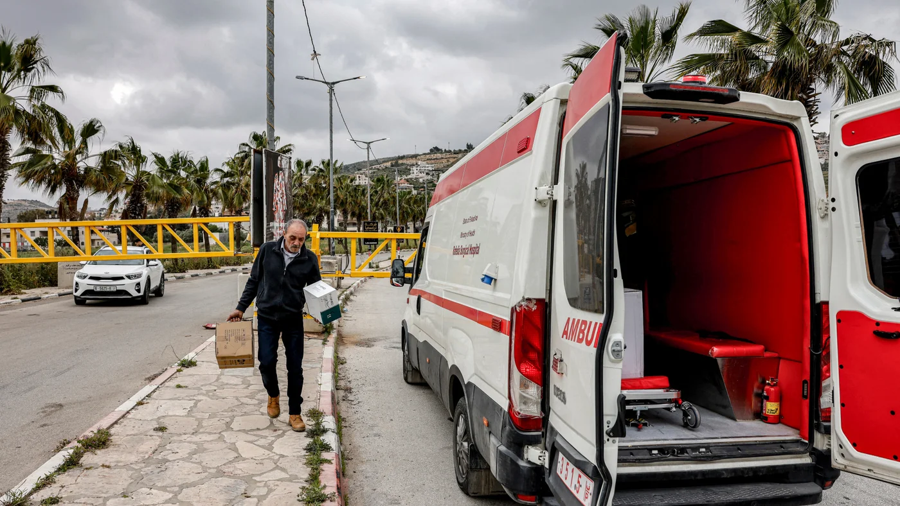
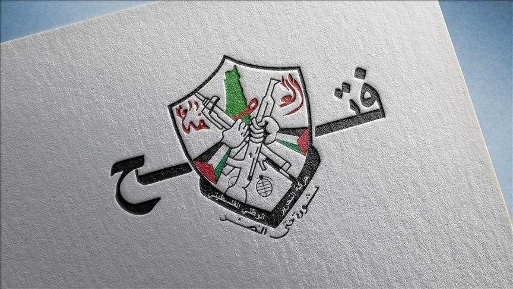

الاستقلالية
نحافظ على استقلالنا الكامل في التغطية والتحرير والقرار.

مهنية. مستقلّة. موثوقة.
شبكة صحفية فلسطينية مستقلّة، تقدّم المعالجات والتحليلات العميقة المرتبطة بالشأن الفلسطيني، وتأثيراته إقليمياً ودولياً، عبر رواية تحريرية تركّز على الدقّة والسياق.
نؤمن أنّ الخبر لا يكتمل دون سياقه، لذلك لا نكتفي بنقل الحدث، بل نبحث عن خلفيّته الكاملة، حقائقه الإنسانية، وأبعاده السياسية.
نعمل على تفكيك الخطاب، والتحقّق من المصادر، وتمكين الرواية الفلسطينية من الوصول إلى الجمهور العالمي بصورة متوازنة تحترم عقل القارئ.
المهنية ليست حياداً في وجه الظلم، بل دفاعاً عن الحقيقة.
نحافظ على استقلالنا الكامل في التغطية والتحرير والقرار.
نقدّم الأخبار والتحليلات وفقاً للمعايير المهنية بعيداً عن الإثارة.
ندقّق المعلومات من مصادرها الأصلية قبل نشرها، لأن الحقيقة مسؤوليتنا.
نمنح كلّ طرف حقّه في المعرفة، ونروي كلّ قصّة من أكثر من زاوية.
رحلة الخبر من الميدان إلى القارئ
نرصد الحدث لحظة وقوعه من مصادر ميدانية موثوقة.

02تتحقّق من المعلومات والصور عبر شبكة واسعة من المصادر.

03يعمل محرّرونا على المعالجة والتحليل في سياق مهني دقيق.

04ننشر الخبر والتحليل بأسلوب واضح ومسؤول عبر كل منصّاتنا.

أحدث الأخبار والتطوّرات على مدار الساعة.

رؤى معمّقة من كتّاب ومحلّلين متخصّصين.

تقارير رقمية ورسوم بيانية توضّح الصورة.

توثيق بصري للحدث من قلب الميدان.
تقارير مرئية ومواد وثائقية من الميدان.
خرائط وبيئات تفاعلية لفهم الحدث بعمق.
تأسيس شبكة الصحافة الفلسطينية كمنصّة إخبارية مستقلّة تركّز على الشأن الفلسطيني.
إطلاق أقسام التحليلات المعمّقة والقصة في أرقام لقراءات أعمق للحدث.
إطلاق منصّات الفيديو والبودكاست والتحقيقات التلفزيونية.

دمج أدوات الذكاء الاصطناعي لتعزيز الدقّة وسرعة الوصول للمعلومة.
نستقبل البلاغات والوثائق بسرّية تامّة، ونلتزم بحماية مصادرنا. تواصل مع غرفة التحرير.